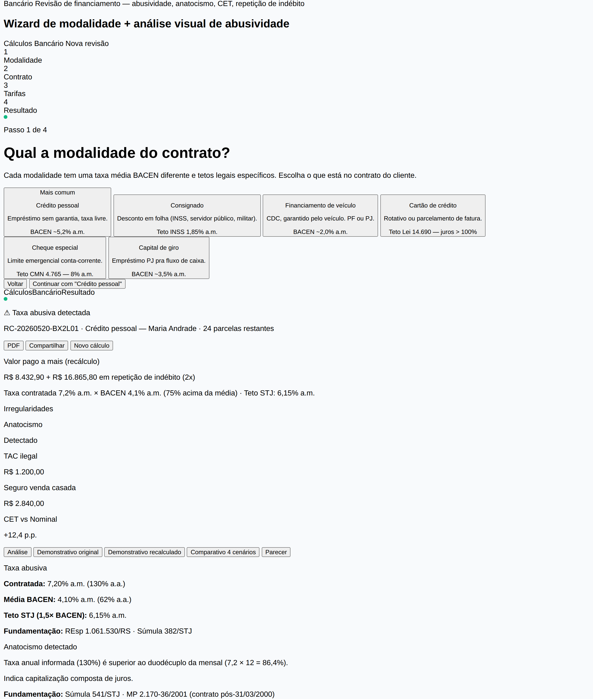
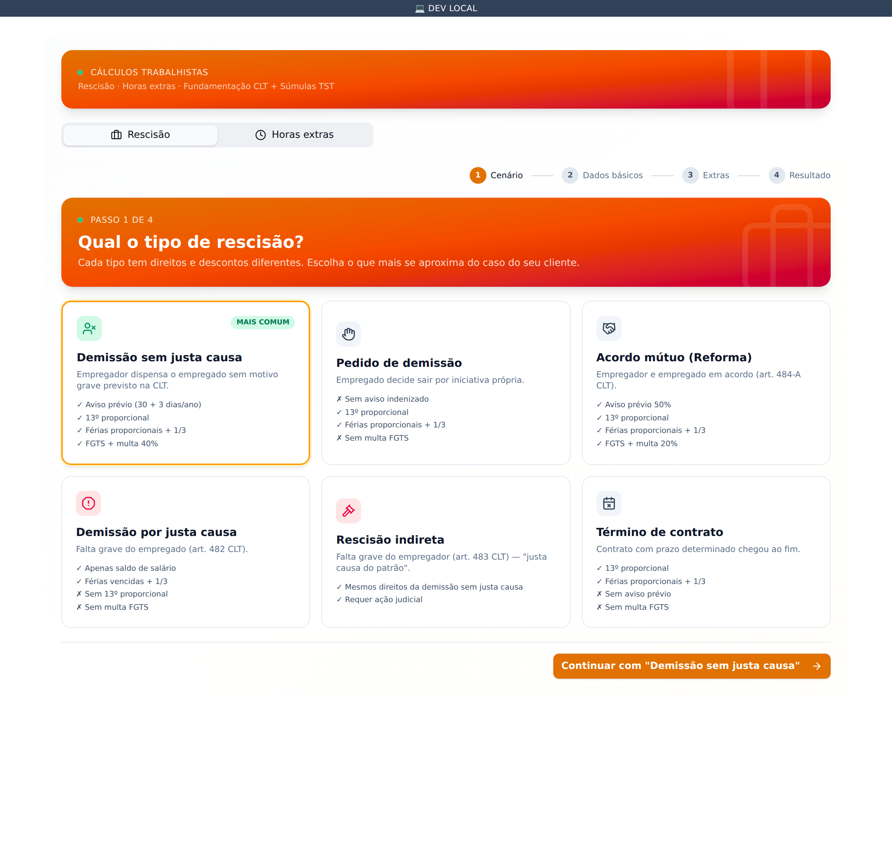
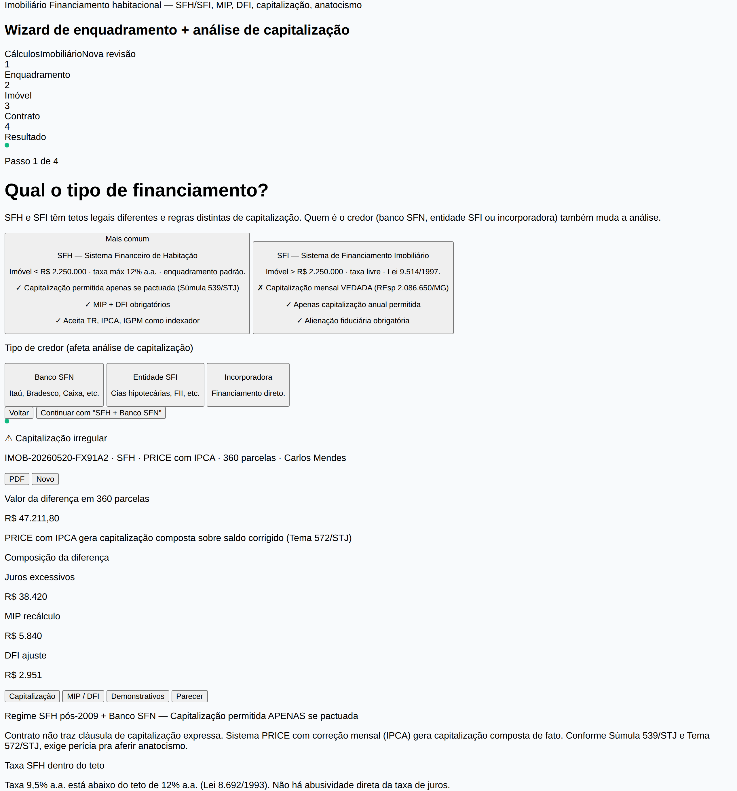
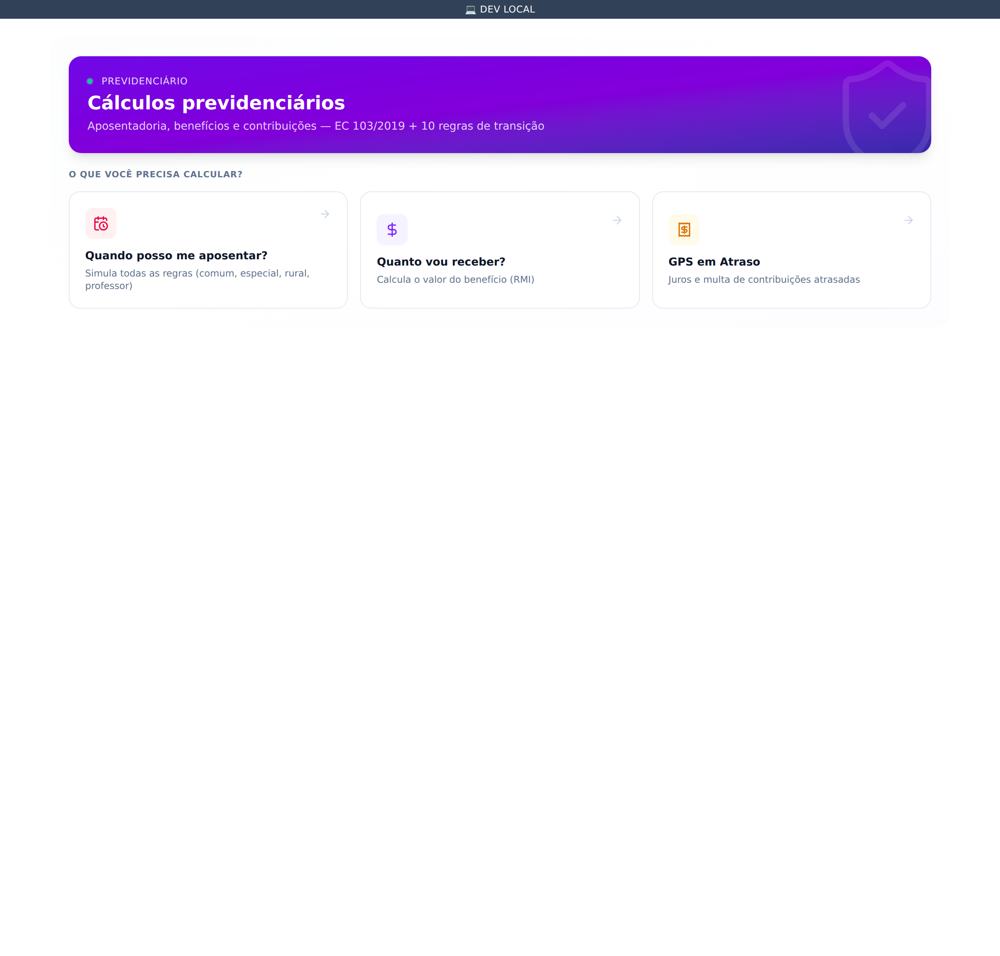
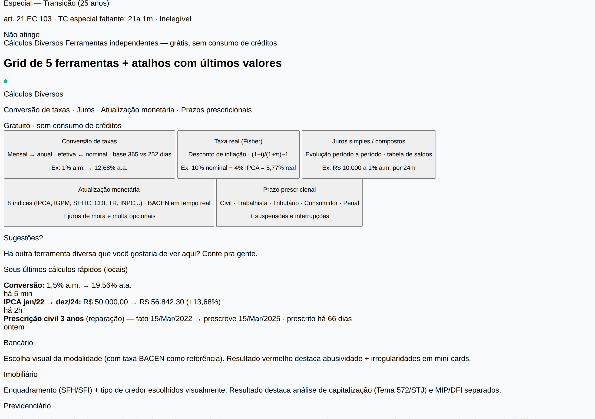

Atender um cliente novo não devia exigir 6 abas abertas. Aqui, o WhatsApp, o contrato, a cobrança e a comissão do sócio conversam entre si — como sempre deveriam ter conversado.
Tem plano grátis. Sem fidelidade. Cancela quando quiser.

↑ acima: print da calculadora bancária do sistema. v2.4, mai/2026
Cada SaaS resolve um pedaço da operação — e nenhum conversa com o outro. O lead chega num lugar, vira contrato em outro, é cobrado num terceiro e ninguém sabe quanto comissionar pro sócio sem abrir uma planilha.
A gente juntou tudo numa tela só.
tudo num lugar só
Conversa nativamente com
Cinco motores diferentes pra você não abrir mais Excel. Cada um vem com o parecer técnico já citando a Súmula que sustenta o cálculo.
Você coloca o contrato bancário — taxa, parcelas, modalidade. O sistema compara com a média BACEN, identifica TAC, TEC, IOF e seguro casado, aponta capitalização irregular, e te entrega o parecer fundamentado pronto pra anexar na inicial.

Seis cenários (sem justa causa, demissão, acordo mútuo, indireta, justa causa, término). Horas extras com DSR, adicional noturno, multa 40% do FGTS, multa do art. 477.

Enquadramento automático no sistema certo (SFH ou SFI), análise de capitalização irregular, indexadores TR, IPCA, IGPM. PRICE com correção é capitalização composta? O parecer explica.

"Quando posso me aposentar?", "Quanto vou receber?", "GPS em atraso?". Três ferramentas que cobrem aposentadoria comum, especial, professor e as 10 regras de transição.

Conversão de taxas, Fisher (taxa real), TIR, juros simples e compostos, atualização monetária por IPCA ou Selic. Quase nunca você precisa, mas quando precisa, salva.
Não é só uma promessa. São 14 módulos que já estão lá hoje, mexendo entre si o tempo todo. Espia.
WhatsApp do escritório, Instagram, e-mail. Quando o cliente manda mensagem, cai aqui. E o painel ao lado já mostra histórico financeiro, contratos anteriores, qual processo é dele — sem precisar abrir outra aba.
A IA do lado ajuda. Sugere resposta, identifica risco LGPD, propõe agendamento. Quem decide é você.
/atendimento
previewMaria Silva
agoraTrabalhei 5 anos sem...
Carlos Mendes
10min📷 Foto · contrato
Ana Pereira
1h🎤 Áudio · 0:18
João Souza
2hObrigado, doutor!
Maria Silva
Brief automático
Cliente recorrente — última conversa há 1 ano. Caso anterior (divórcio) foi ganho. Sem cobrança em aberto. Pode oferecer reunião gratuita.
/smartflow
previewSmartFlow
Automações inteligentes — WhatsApp + IA + Cal.com
Cobrar boleto vencido
Quando o Asaas avisar que venceu, espera 2 dias, gera mensagem com IA, manda no WhatsApp.
Lead novo → kanban
Qualquer canal. Cria card no kanban da área certa e atribui pro plantonista.
Triagem WhatsApp
IA lê a mensagem, classifica a área (cível, bancário, trabalhista...) e direciona pro agente certo.
Lembrete de reunião
2h antes do horário do Cal.com, manda mensagem confirmando.
Imagine criar uma regra do tipo "quando o boleto vencer, espera 2 dias, IA escreve uma mensagem educada, manda no WhatsApp, e se ainda não pagar, abre tarefa pro sócio" — em 3 minutos. Sem código.
Se você já usou Notion ou Figma, o jeito de pensar é o mesmo: você arrasta blocos e conecta um no outro.
Gatilhos
WhatsApp, Asaas, Cal.com, novo lead, manual...
Ações
IA, condicional, esperar, webhook, kanban...
Sobe os seus modelos de contrato, suas peças favoritas, as teses que você usa. O agente lê tudo e passa a responder os clientes no jeitinho do escritório — não com aquele tom genérico do ChatGPT.
Você cria um agente por área: trabalhista, bancário, previdenciário, cível. Cada um com prompt próprio e modelo escolhido por custo.
/agentes-ia
previewAgentes IA
3 ativos · 1.483 conversas/mês
Trabalhista
GPT-4o Mini · temp 0.4
Triagem rescisão, horas extras, vínculo não anotado.
Bancário
Claude Haiku · temp 0.3
Detecta abusividade e prepara a inicial.
SDR
GPT-4o Mini · temp 0.6
Qualifica lead do Instagram e WhatsApp.
Criar novo agente
Escolhe modelo, escreve prompt
/kanban/Trabalhista
previewNovo
3Silva × Banco BR
0012345-67.2026
Costa × União
tributário
Em curso
5Pereira × INSS
Souza × Cia. X
Sentenciado
2Lima × Construtora
Encerrado
12Andrade × Imob.
trânsito em julgado
Mota × Estado
Funil por área (trabalhista, bancário, cível...), cartões arrastáveis, cores que indicam prioridade na borda esquerda. Você bate o olho e entende o pipeline do escritório.
Tag de audiência se aproximando? Aparece. Cliente que tá há 3 dias sem dar retorno? Aparece. Sem precisar abrir cada card pra saber.
Acompanhe uma cliente que chegou às 9h e virou pagamento até as 14h — sem o seu escritório sair do JuridFlow uma única vez.
09:14
Pelo Instagram do escritório.
09:14
Faz 3 perguntas, estima R$ 38.400.
09:18
Cal.com encontra slot do Dr. Rafael.
11:32
Modelo preenchido. Link de assinatura.
14:08
Asaas avisa, entra no caixa.
no mesmo segundo
+R$ 1.350 pro Dr. Rafael, sem planilha.
Acabou. 4 h 54 min. Você não abriu uma planilha, não trocou de aba, não esqueceu de cobrar.
486
escritórios já estão dentro
R$ 12M
de honorários passaram por aqui
73k
contratos gerados sem Word
18h
a menos por mês, em média
Cadastra a credencial uma única vez no cofre criptografado e a gente faz o login automático. Captura publicação no minuto em que sai.
Sem depender de API de terceiro — nada de Judit, Jusbrasil, rate-limit ou planos por consulta.
9 tribunais — TJCE, TJRJ, TJMG, TJDFT, TJPE, TJES, TJPR, TJRS, TJGO
5 tribunais — TJSP, TJSC, TJBA, TJAM, TJAC
4 regionais trabalhistas
2 federais via ePROC
monitorando 18.392 processos · ao vivo
A maioria dos sistemas decide sozinha o que vai construir. Aqui não: todo cliente sugere features e vota nas dos outros. As mais votadas sobem na prioridade. Sem segredo.
Olhar o roadmap todoHonorários de sucumbência no automático
"Sistema podia calcular sozinho com base no valor da causa..."
Faltam o TJBA e o TJDF no PJe
"Atendemos clientes na Bahia, sentindo falta..."
Petição inicial completa pela IA
"Treina no nosso acervo e gera com fundamentação..."
2FA no cofre dos tribunais ✓
"Login do TJSP exigia 2FA, agora rola sozinho."
"Em 15 dias troquei quatro mensalidades por uma só. O bichinho atende cliente no WhatsApp enquanto eu durmo — acordo com lead qualificado na agenda."
Dra. Camila Albuquerque
Albuquerque Advocacia · Recife/PE
"O dia inteiro era abrindo painel do Asaas pra ver quem ainda devia. Agora o sistema avisa, manda lembrete, e se o cliente não pagar vira tarefa minha automaticamente. Inadimplência caiu 60%."
Dr. Rafael Tavares
Tavares & Associados · Fortaleza/CE
"Somos 7 sócios e divisão de comissão sempre virava bate-boca. Hoje cada um vê o próprio painel, com o quanto vai receber em tempo real. Acabou a briga."
Dra. Marina Costa
Costa Sociedade de Advogados · SP
Sem fidelidade, sem taxa de setup, sem letrinha miúda. Cresce com o escritório.
Free
R$ 0/mês
Pra dar uma volta no sistema
Básico
R$ 97/mês
Pra você que advoga sozinho
Intermediário
R$ 247/mês
O ponto doce — escritório de 2 a 5 pessoas
Completo
R$ 497/mês
Pro escritório que cresceu
Como funciona
Pode, e nem precisa botar cartão. O plano Free é pra sempre, dá pra ver o sistema rodando, cadastrar até 10 clientes e usar as funções básicas. Se gostar, faz upgrade.
Quando você sobe de plano, pedimos CPF ou CNPJ (uma vez só) e geramos uma cobrança no Asaas. Você paga via Pix, boleto ou cartão e o plano sobe na hora. Se o pagamento falhar, a gente avisa.
A gente faz login automático no tribunal (PJe, E-SAJ, TRT, TRF) com a sua credencial — que fica num cofre criptografado AES-256-GCM aqui. Quando sai publicação nova, captura na hora. Sem rate-limit de API de terceiro.
No plano Completo, sim. Você sobe seus modelos de contrato, peças favoritas e teses. O agente lê e passa a responder no padrão do seu escritório — não com aquele tom genérico de ChatGPT. Pode escolher GPT-4o Mini, Claude Haiku ou GPT-4 por custo.
Cancela em um clique. Sem multa, sem ligação de retenção. Você fica até o fim do mês contratado e pronto. Pode até voltar pro Free e deixar a conta aberta.
Sim. Cada escritório fica isolado no banco. Credenciais de tribunal com AES-256-GCM. Auditoria de tudo que acontece (quem mexeu, quando, o quê). Backup diário. LGPD compliant.
Você não precisa migrar tudo de uma vez. Começa cadastrando um cliente, gerando um contrato. Quando perceber, já tá tudo aqui.
Setup em 5 min · Atendimento humano em PT-BR · Roadmap aberto
cliente desde 2025
"Pago R$ 247 e em 30 dias o sistema se pagou só com o que recuperei de cobrança esquecida. A planilha foi pra gaveta e não voltou."
Dr. Pedro Vasconcelos
PV Advogados · Belo Horizonte/MG